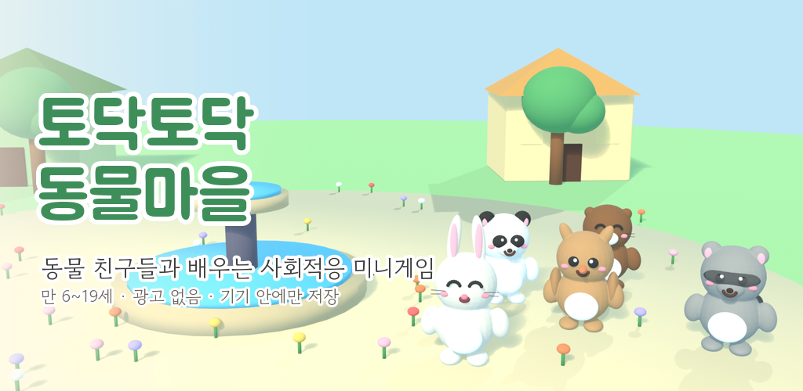
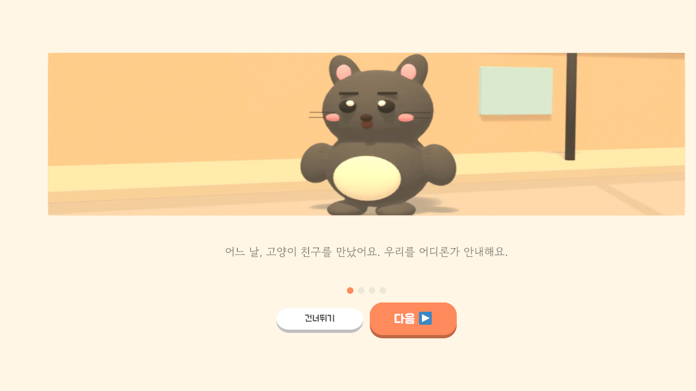
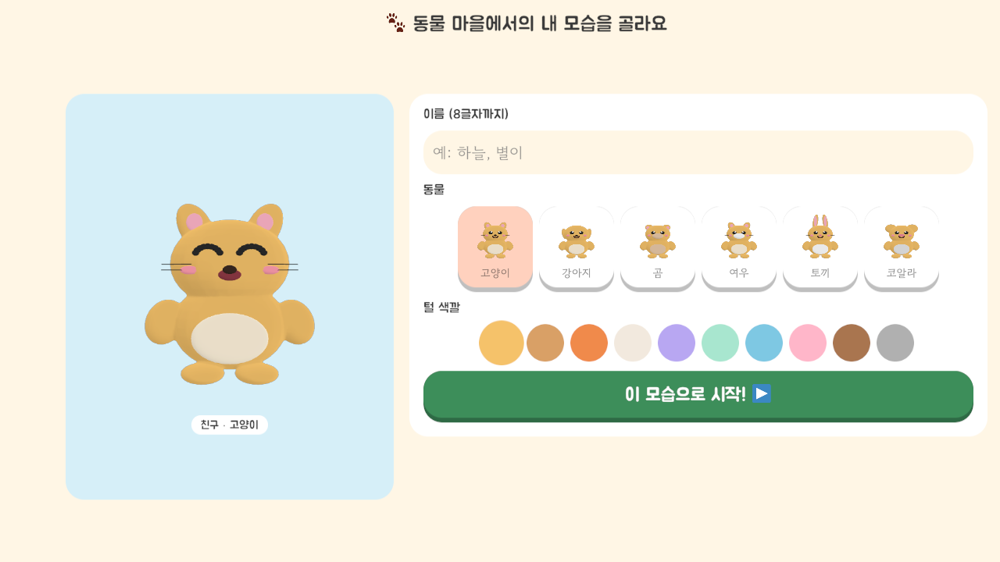
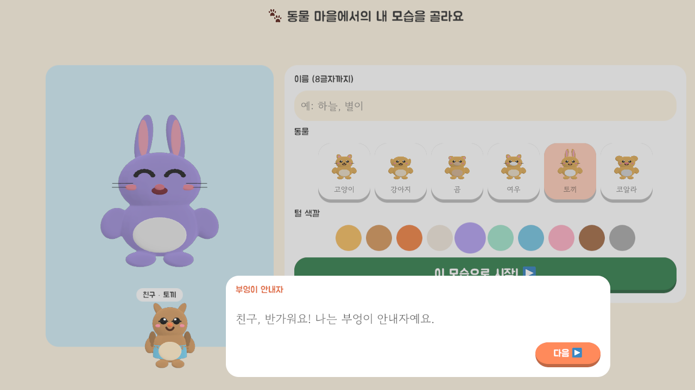
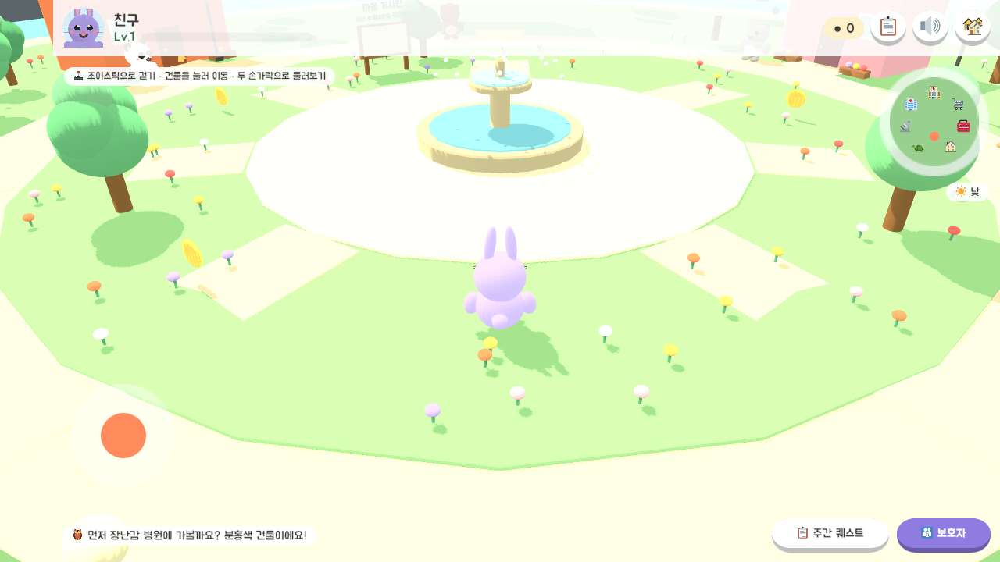

학교·병원·마트에서 순서 지키기, 준비하기, 계산하기와 안전한 도움 요청을 연습해요.
한 걸음씩, 내 속도로 배우는 일상놀이가 되는
놀이가 되는
사회적응 연습
병원·학교·마트와 따뜻한 동물 친구들 사이를 걸으며 감정 표현, 도움 요청, 생활 순서를 차근차근 익혀요.
광고 없음로그인 없음인앱 결제 없음기기 안에만 저장

아이에게는 편안한 놀이,
보호자에게는 또렷한 성장 기록
한 화면에서 한 가지 행동에 집중하고, 언제든 힌트를 보고 다시 시도할 수 있게 만들었습니다.
감정을 고르고 원인을 살핀 뒤 호흡, 마음 말하기, 긍정 자기대화를 천천히 따라가요.
큰 글자, 고대비, 음성 안내와 세션 알림을 조절하고 기기 안의 활동 기록을 확인해요.
직접 실행한 최신 Android 화면
출시 빌드 2.1.1에서 촬영한 실제 화면입니다.




안심하고 사용할 수 있어요
회원가입, 광고, 분석 도구와 외부 서버가 없습니다. 캐릭터와 활동 기록은 이용자의 기기 안에만 저장되며 앱 안에서 직접 지울 수 있습니다.
- 만 6~19세 아동·청소년을 위한 한국어 교육 게임
- 무료, 확률형 아이템과 유료 결제 없음
- 가로 화면 태블릿 권장, 스마트폰 지원
- 개인정보처리방침 보기
감정 조절과 사회적 기술을 연습하는 교육용 콘텐츠이며 의료적 진단이나 치료를 제공하지 않습니다.